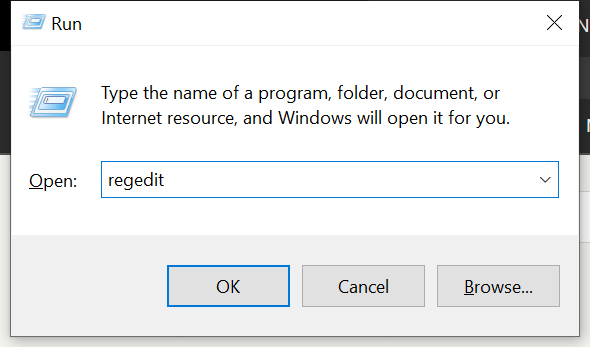
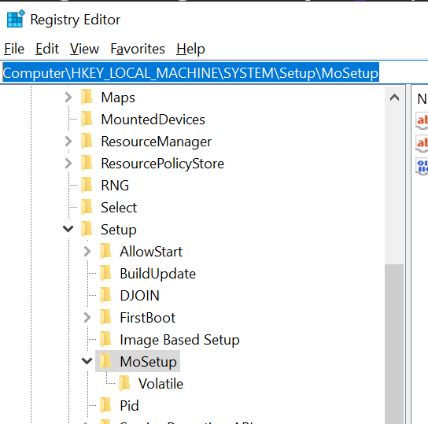
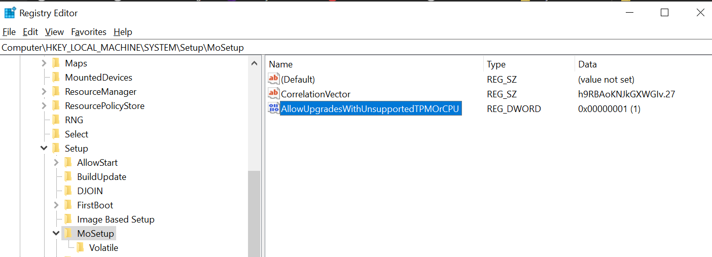
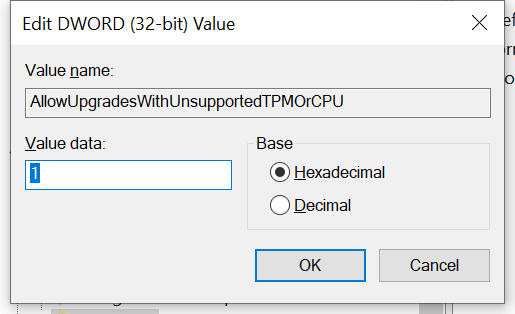
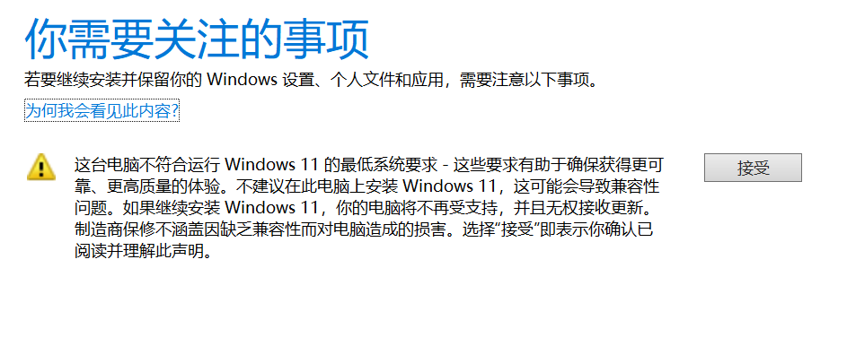

解除 Windows 11 TPM 或 CPU 限制
最近微软发布了 Windows 11 正式版。但是对设备硬件有一些限制，可以通过修改注册表的方式解除限制。
首先打开注册表，快捷键 win + R，输入 regedit：

通过左侧层级菜单找到：Computer\HKEY_LOCAL_MACHINE\SYSTEM\Setup\MoSetup:

选中 Mosetup，菜单栏选择 edit - New - DWORD 添加新键，重命名为：AllowUpgradesWithUnsupportedTPMOrCPU：

双击此键设置值为 1，然后确认：

然后就可以下载镜像安装了，期间会提示硬件不符合要求，但多了个接受选项安装 Windows 11：

升级故障
在实际升级中，我遇到了一个困扰几个星期的问题，当显示升级进度到 31% 的时候就停留不动了，尝试了无数次都无法解决。最后在今天翻看台湾 Windows 社群的时候找到了一篇帖子，受到启发才找到了问题点。
一般这种问题都是因为当前系统内安装的某个硬件的驱动有问题导致升级无法进行，我们需要做的就是找到这个驱动是什么然后卸载它。
我们需要从 C:\$WINDOWS.~BT\Sources\Panther 目录内的 CompatData_ 开头的 xml 文件中找到 DriverPackages 标签的内容，找到 BlockMigration="True" 后面的 inf="XXX.inf" 记住这里的 inf 文件名称，在 C:\Windows\INF 目录中找到对应的 inf 文件，用记事本打开文件，查看这到底是什么驱动，根据驱动名称和驱动版本等信息，在设备管理器中找到对应驱动并卸载它。
如果 xml 文件中没有找到相关信息，则需要在 C:\$WINDOWS.~BT\Sources\Panther 目录内 setupact.log 文件中找相关信息，一般我们直接翻到日志最后一部分，查找相关信息，同样是找到 XXX.inf 文件。
正确的找到并卸载驱动后，需要删除 C:\$WINDOWS.~BT\Sources\Panther 中的 compatscancache.dat 和 CompatData_ 开头的 xml 文件。然后就可以测试再次启动升级。
参考链接
标签：无